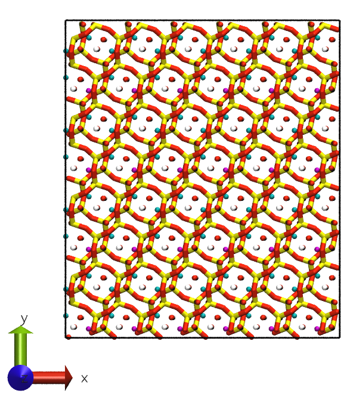
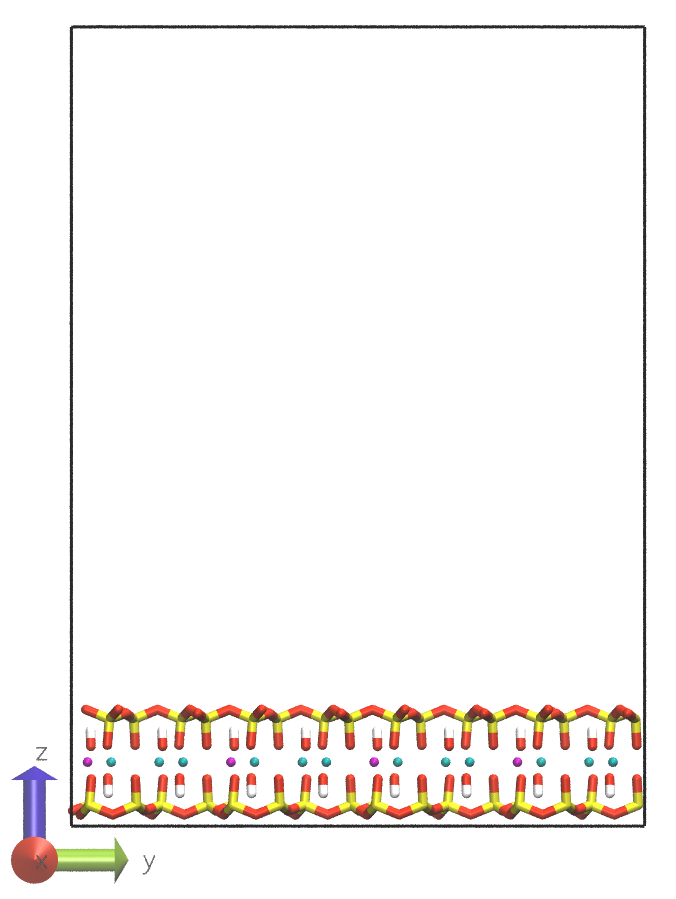
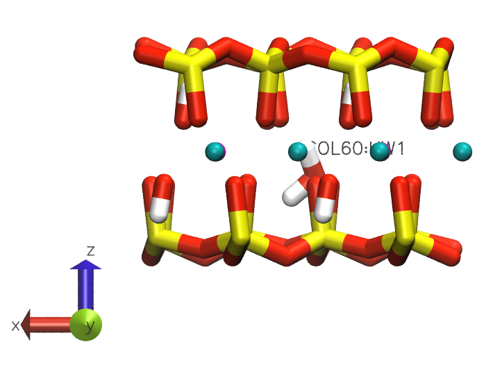
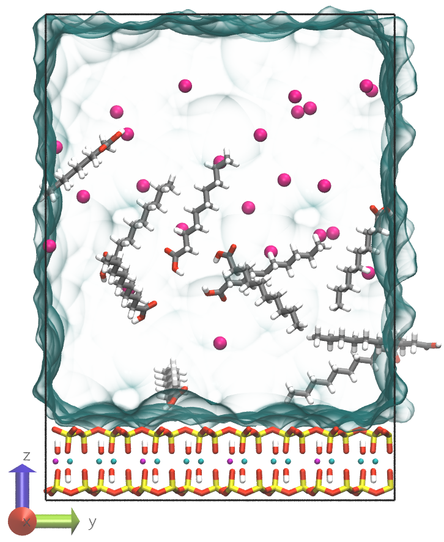

This tutorial was created by Hannah Pollak and Valentina Erastova and is based upon the Layered
material simulations set up tutorial by Valentina Erastova.
Clays are a diverse group of minerals that are found in soils and sediments throughout the world.
Their basic structural unit is a layer composed of one or two sheets of silica tetrahedra,
[Si4+O5]
and one sheet of divalent or trivalent metal octahedra, [M2+3(OH)2O4]
(M2+
= Mg2+, Fe2+, ...),
or [M3+2(OH)2O4] (M3+ = Al3+, Fe3+).
These layers are stacked on top of each other to form a 3D structure.
So‐called isomorphous substitution of tetrahedral Si4+ by a M3+ ion or
octahedral
M3+/M2+ by M2+/M1+ ions
result in a net negative charge on the clay mineral. This negative layer charge is balanced by the
presence
of cations (Na+, K+, Ca2+, Mg2+, ...) in the interlayer space.
Side view illustrations of clay sheet structure and composition (left) and two stacked clay with
interlayer space (right).
Today's system will be a montmorillonite MMT in contact with water, ions and organic molecules.
We will start by building the clay sheets from unit cell (UC) building blocks.
The composition of this unit cell is the following:
[Si4+8O5][Al3+3Mg2+(OH)2O4]
‐1. The ‐1 charge originates from one of the octahedral Al3+ atoms being substituted
by a
Mg2+ atom.
In the session tutorial, the atoms are colour‐coded according to the following scheme:
Atom type colours
Element
Colour
empty
Element
Colour
Si
yellow
empty
Al
cyan
O
red
empty
Mg
purple
H
white
empty
C
gray
Montmorillonite unit cell top view (left) and side view (right).
Building the clay sheets
Before you start on this practical, let's create a working directory for this session.
Create the working directory for this session
Move to your home directory:
$ cd
Copy the session3 folder from practicals to your home directory:
Open a terminal and type:
$ cp ‐r /home/student/practicals/session3 .
Change into the session3 directory:
$ cd session3
The clay model will consist of a single montmorillonite clay sheet. The first step is to create a sheet by
multiplying a single MMT UC.
This can be done using GROMACS genconf.
Use genconf to create a single clay sheet from MMT UCs
(MMT.gro) with a cutoff of 1.2 nm:
‐f specifies the structure file of the system to insert into. ‐nbox defines the number of unit cells to put in each of the x y z
directions. ‐o specifies the output file name.
If you only want one layer of clay, use 1 in the z‐direction.
How many (UCs) do you need to multiply in x‐ and y‐direction?
Check the size of unit cell and remember the size of the box has to be at least 2.5 x the size
of your cutoff.
So, for a cutoff at 1.2 nm you have to aim at ~3 nm on each side. Remember: The final line in the .gro file shows the x, y and z cell lengths in
nanometers.

Montmorillonite sheet model top view (left) and side‐view (right).
The box of this sheet model currently has no space for inserting organic molecules, solvent or ions.
Therefore, before moving on, you need to change the box height.
Edit the gro file to increase the box height
Increase the box z length by editing the MMT_slab.gro file.
Where in the .gro file is the box size specified? Adjust the sheet spacing to 50 Å
using nano

Montmorillonite sheet model side view with extended box height.
Adding decanoic acid molecules
Now that you have a clay sheet, you can use insert‐molecules to insert decanoic acid molecules
into
the vacuum space.
Use insert‐molecules to insert 10 decanoic acid molecules into the vacuum space above
the clay sheet (MMT_slab.gro):
‐f specifies the coordinate file of the system to insert into. ‐ci specifies the coordinate file of the molecule to insert. ‐nmol defines the number of molecules to insert. ‐o specifies the output coordinate file name.
GROMACS will try to fit the requested number of molecules in the available space. It will
notify you about whether it was successful or not. If unsuccessful, repeat this step until
the requested total number have
been added (you may need to lower -nmol
<number>
if it successfully added some but not all).
Grey decanoic acid molecules inserted into the vacuum space above the clay sheet.
Preparing the topology file
Before proceeding to the next step in which you will solvate the box, you need to generate a topology
(.top) file
that includes all molecules present in the system. The following explains the structure of GROMACS
topology files in some more detail.
In the first section, the force field parameters are defined. These always include combination rules and
non‐bonded interaction parameters (atom types, atomic masses, atomic charges, Lennard‐Jones
parameters).
They can optionally include
bonded interaction definitions (bond, angle and dihedral types with bond, angle and dihedral interaction
force constants and equilibrium values in this order). A detailed explanation can be found in the GROMACS
documentation pages: topology files,
topologies and
force fields.
Even if they consist of only one atom, all atoms of the system are part of molecules. These are defined
in the second section, [ moleculetype ]. All molecule type definitions, such as the
MMT UC,
decanoic acid, water and ions need to be included in the topology file.
Elements from the first two sections are usually defined in separate files that are included in the topology
file.
The syntax for including files is #include "<filename>".
The third section contains the system name and the number of molecules of each type in the system. The
system section starts with the keyword [ system ] and is followed by a name chosen for the
system (the choice of the name does not really matter).
The number of molecules of each type is specified in the [ molecules ] section.
Important: The order of the molecules in the [ molecules ] section must match the
order of the molecules in the .gro file.
Generate a topology file for the system (MMT_slab.top):
Open the topology file MMT_slab.top in a text editor to fill in missing
sections.
All force field folders (<ForceFieldName.ff>) are located within the
FF directory. The force field for clay and water is ClayFF, for organics and ions
it is CHARMM36, and for ions it is Ions.
Inside each of the folders, you can find the .itp files that contain the various
force field parameters.
Everything that comes after a ; will be treated as a comment and
is not read by GROMACS.
Add nonbonded parameter files (ffnonbonded.itp) for clay, organics and ions.
Clay and water share the same atom types. Therefore, no separate
ffnonbonded.itp file needs to be added for water.
Add bonded parameters for organics (ffbonded.itp).
Include molecule definitions for ions (ions.itp), water (spc.itp),
MMT
(MMT.itp) and decanoic acid (decanoic_acid.itp).
The files containing the decanoic acid and MMT structure parameters are located in
the
STRUCTURES directory.
Complete the molecules section.
Add entries for all molecules in your .gro file.
E.g. for two MMT UCs and one decanoic acid, the entry would be:
[ molecules ]
; Compound # mols
MMT 2
DECA 1
Solvating the system
Now that you have a topology file, you can use GROMACS to solvate the box.
Use solvate to solvate the box with water (MMT_dec.gro):
‐cp specifies the input coordinate file of the system to solvate. ‐cs specifies the water model coordinate file. ‐o specifies the output coordinate file. ‐p specifies the input/output topology file.
GROMACS will try to fill the available space with solvent and update the number of water
(SOL)
molecules in the output topology file.
Solvated MMT sheet model with grey decanoic acid molecules in simulation
box.
After this step, make sure to visualise the system in VMD to check that no water molecules
were inserted into or very close to the clay sheets. If this was the case, you can either
repeat the solvation step (make sure to delete the SOL line from the topology
first) or remove the water molecules manually.
In order to manually remove water molecules, look at the system in VMD and press "1" on
your keyboard to select the water molecules
that are too close to the clay. The label of the selected water molecule will then show you
which residue you will need to remove from the .gro file. E.g. if the label
shows SOL60:HW1 (see figure below), you will need to remove the three
SOL60 lines
from the MMT_dec_solv.gro file and change the number of atoms in the header
to match the new number of atoms in the file. Make sure to also update the number of water
molecules in the MMT_dec_solv.top file.

Water molecule SOL60 inside the clay sheet.
Adding ions to neutralise the system
Now you have a solvated system, but the system has a net negative charge because of the substitutions in the
clay sheet and the
deprotonated decanoic acid molecules.
It is not possible to run a simulation with a charged system. Therefore, you need to neutralise the system
with cations.
You can use genion to add ions and neutralise the system.
Neutralise the system with Na+ ions:
Generate a run TPR file for the system (MMT_dec_solv.tpr):
Since genion is a type of MD run, you need to first use
grompp to
generate a TPR file. The contents of the MDP input file is not important
for
this step, but it has to be given.
‐f specifies the input run parameter file. ‐c specifies the coordinate file of the system to solvate. ‐p specifies the topology file. ‐o specifies the compiled output .tpr file. ‐pp specifies the output topology file. ‐maxwarn specifies the maximum number of warnings that can be ignored.
If the protein has a charge, grompp will generate a warning that needs to be
ignored.
Because genion is an MD run, the ‐pp
option
to generate a new topology file with ions is used here rather than with the genion
command.
grompp will generate a note similar to this one:
NOTE 3 [file MMT_slab_dec_solv.top, line 40]:
In moleculetype 'MMT' 32 atoms are not bound by a potential or constraint
to any other atom in the same moleculetype. Although technically this
might not cause issues in a simulation, this often means that the user
forgot to add a bond/potential/constraint or put multiple molecules in
the same moleculetype definition by mistake. Run with ‐v to get
information for each atom.
This note is not an error, but a warning that the atoms in the clay sheet are not bonded to each
other. Because ClayFF is a non‐bonded force field, this is not an error, and you can ignore
this
message.
Use genion to neutralise the system with Na+ ions:
‐s specifies the input coordinate file of the system to solvate. ‐o specifies the output coordinate file ‐p specifies the input topology file ‐pname specifies the name of the positive ion ‐nname specifies the name of the negative ion ‐neutral – neutralise the system
You will be asked which molecules should be replaced with ions. Select the code for the
water SOL molecules.
GROMACS will try to fill the available space with solvent and update the number of water
(SOL)
molecules in the output topology file.

Solvated and MMT sheet model in simulation box with grey decanoic acid molecules and pink
Na+ ions.
Preparing the MD simulation parameter files
Now your system is ready for simulation.
You can follow the same procedure as in the previous session to run the simulation.
Use the MDP template files inside the MDP directory and complete
the
missing keyword sections:
Energy minimisation: em.mdp Set the maximum number of steps to 5000 and the force tolerance to 500
kJ mol‐1 nm‐1.
Equilibration: eq.mdp
Set the run time to 100 ps and the time step to 1 fs.
Production: prod.mdp
Set the run time to 5 ns and the time step to 2 fs.
‐f specifies the input run parameter .mdp file. ‐c specifies the input coordinate file. ‐p specifies the topology file. ‐o specifies the compiled output .tpr file. ‐pp specifies the output topology file.
Run the energy minimisation
gmx mdrun ‐s em.tpr ‐deffnm em ‐v
‐s specifies the compiled input .tpr file. ‐deffnm specifies the output file naming pattern. ‐v specifies that the output should be verbose.
Before moving on to the equilibration, you should check the energy minimisation log file
(MMT_dec_solv_ion_em.log) to make sure that the energy minimisation was successful.
If the energy minimisation was successful, the log file should end with a message similar to this
one:
Steepest Descents converged to Fmax < 500 in 1209 steps
Potential Energy = -4.5789000e+06
Maximum force = 4.9707333e+02 on atom 2904
Norm of force = 2.2770223e+01
If instead you find something along these lines:
Steepest Descents converged to machine precision in 192 steps,
but did not reach the requested Fmax < 500.
Potential Energy = -6.8659256e+05
Maximum force = 6.5820524e+07 on atom 715
Norm of force = 1.6491472e+06
This means that the energy minimisation did not converge, meaning that GROMACS was not able to
reach a minimum where the maximum force was below the specified threshold. In this case, you will
probably need to
repeat parts of the assembly procedure or remove water molecules that are too close to the clay,
organics or other waters. Before repeating, follow the EM Troubleshoot instructions.
EM Troubleshooting: Note which atom has the highest forces in
the energy minimisation
output of GROMACS.
E.g.:
In VMD, go to the Graphical Representations window.
Create a new representation and for Selected Atoms choose serial <problem_atom_number>,
set
the Drawing Method to VDW and the Coloring Method to ColorID.
You will now be able to see which atom is causing the problem.
If you cannot clearly see the environment of the problem atom, you can replace the Selected
Atoms
in the default representation with within 5 of serial <problem_atom_number>
If a water molecule is causing the problem, you can follow the instructions from the solvate step and remove it from the system.
If the problem is an ion, restart the procedure beginning from the genion step.
If the energy minimisation was successful, you can move on to the equilibration and production runs.
These steps require more resources and will be carried out on Eddie.
Equilibrating the system
As in Session 2, in order to let your system reach
a stable state, you need an equilibration run. For this system, you will only perform one equilibration run with
temperature and pressure coupling (NPT ensemble).
Equilibrate the system at constant temperature and pressure:
Use the eddie_run.sh template to prepare the run script for the equilibration run (run_eq.sh)
Refer to the Session
2 for instructions on how to prepare
the run script and adjust the parameters so that the output files all have the name eq.
Copy the input files to your Eddie scratch directory:
Navigate to the session3 folder inside your directory
Submit the job to the queue:
$ qsub run_eq.sh
Use qstat to check the status of your job.
qstat -u <UUN>
Running the production simulation
Now that you have a stable system, you can run the production simulation.
Run the production simulation:
As before, use the eddie_run.sh template to prepare the run script for the production run (run_prod.sh)
Adjust the parameters so that the output files all have the name prod and the input
files
are the output files from the equilibration run.
After the equilibration run has finished, submit the job to the queue:
$ qsub run_prod.sh
Analysing the results
As in the previous session, while your simulation is running, you can use the files provided in the
example_data folder to carry out the analysis steps.
In this tutorial, you will:
Calculate the root‐mean‐square deviation (RMSD) of the system to determine from which
point on the system is equilibrated.
Determine the radial distribution function (RDF) of the ions to analyse their hydration shell.
Perform a linear density analysis of the ions on the axis perpendicular to the clay surface to characterise
the interactions between ions and the clay surface.
Calculate the RMSD of the system:
Transfer the results from the production run to your local machine:
Refer to the Session 2 for instructions on
how to calculate the RMSD of the system.
Visualise the result in xmgrace and determine the time point at which the system is equilibrated.
You will begin the subsequent analyses starting from this time point.
Save the xmgrace plot as a .png file:
In the xmgrace window open the File menu and select Print setup
In the Device setup field PNG
Set the file path in the Output field and include the .png
suffix.
Click Apply and Accept
In the File menu, click Print.
Calculating the radial distribution function
The radial distribution function (RDF) is a measure of the probability of finding a particle at a
certain distance from another particle. We are going to use it to analyse the hydration shell of Na+
ions.
Calculate the radial distribution function of the ions:
Use the the make_ndx tool to create an index file for
Na+ ions and water OW atoms.
GROMACS does not have Na+ and water OW atoms in its default selections.
Therefore, we have to first create a new index .ndx file that also contains these atom
groups:
$ gmx make_ndx ‐f prod.gro ‐o Na_OW.ndx
Select NA and OW atoms by adding two new groups to the index file:
Type each line and press Enter.
> a NA
> a OW
Exit and save the index file by typing q and pressing Enter.
‐selrpos specifies the positions used in the analysis.
‐b specifies the start time for the analysis.
‐tu specifies the time unit.
‐norm specifies if the density should be normalised to 1.
Here we select to keep the number density which will represent the number of atoms in the
hydration shell.
‐rmax specifies the maximum distance between two atoms in the analysis.
Then, first select OW by typing the group number and hitting Enter and
then
add Na to the selection. Hit Enter again and exit with
Ctrl+D
Use xmgrace to visualise the result.
Visualising the results
You can use the same procedure as in the setup procedure to visualise the trajectory.
Visualise the trajectory in VMD
Open VMD and load the prod.gro file.
Load the trajectory file into the molecule.
Right‐click on the molecule and select Load Data into Molecule.
Then, select the prod.xtc trajectory file.
The loading of all the frames might take some time. You can speed up the
proceed if
you hide the molecule during this process. To do this, click on the D next to
the molecule
entry in the main menu. It will turn red and the molecule will be hidden. Once the
trajectory is
loaded, you can click on the D again to show the molecule.
Use the Play button to play the trajectory. You can adjust the playback with
the
controls at the bottom of the main window.